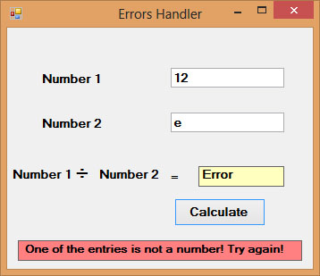

Visual Studio 2013 Lesson 22: Errors Handling
[Lesson 21] << [Contents] >> [Lesson 23]
22.1 Introduction to Errors Handling in Visual basic 2013
Errors often occur due to incorrect input from the user. For example, the user might make the mistake of attempting to enter text (string) to a box that is designed to handle only numeric values such as the weight of a person, the computer will not be able to perform arithmetic calculation for text therefore will create an error. These errors are known as synchronous errors.
Therefore a good programmer should be more alert to the parts of program that could trigger errors and should write errors handling code to help the user in managing the errors. Writing errors handling code is a good practice for Visual Studio 2013 programmers, so do not try to finish a program fast by omitting the errors handling code. However, there should not be too many errors handling code in the program as it create problems for the programmer to maintain and troubleshoot the program later.Visual Studio 2013 has improved a lot in its built-in errors handling capabilities compared to Visual Basic 6. For example, when the user attempts to divide a number by zero, Visual Studio 2013 will not return an error message but gives the ‘infinity’ as the answer (although this is mathematically incorrect, because it should be undefined)
22.2 Using On Error GoTo Syntax
Visual Studio 2013 still supports the VB6 errors handling syntax, that is the On Error GoTo program_label structure. Although it has a more advanced error handling method, we shall deal with that later.We shall now learn how to write errors handling code in Visual Basic 2013. The syntax for errors handling is
On Error GoTo program_label
where program_label is the section of code that is designed by the programmer to handle the error committed by the user. Once an error is detected, the program will jump to the program_label section for error handling.
Example 22.1: Division Errors
In this example, we will deal with the error of entering non-numeric data into the text boxes that suppose to hold numeric values. The program_label here is error_handler. when the user enter a non-numeric values into the text boxes, the error message will display the text”One or both of the entries is/are non-numeric!”. If no error occurs, it will display the correct answer. Try it out yourself.
The Code
Private Sub BtnCal_Click(sender As Object, e As
EventArgs) Handles BtnCal.Click
Lbl_ErrMsg.Visible = False
Dim firstNum, secondNum As Double
On Error GoTo error_handler
firstNum = TxtNum1.Text
secondNum = TxtNum2.Text
Lbl_Answer.Text = firstNum / secondNum
Exit Sub ‘To prevent error handling even the inputs are valid
error_handler:
Lbl_Answer.Text = “Error”
Lbl_ErrMsg.Visible = True
Lbl_ErrMsg.Text = ” One or both of the entries is/are non-numeric! Try
again!”
End Sub
The runtime interface
{kind=link}
*Please note that division by zero in Visual Basic 2013 no longer gives an error message, but it displays the answer as Infinity.
22.3 Errors Handling using Try…..Catch….End Try Structure
Visual Studio 2013 has adopted a new approach in handling errors, or rather exceptions handling. It is supposed to be more efficient than the old On Error Goto method, where it can handles various types of errors within the Try…Catch…End Try structure.
The structure looks like this
Try
statements
Catch exception_variable as Exception
statements to deal with exceptions
End Try
The Code
Private Sub BtnCal_Click(sender As Object, e As
EventArgs) Handles BtnCal.Click
Lbl_ErrMsg.Visible = False
Dim firstNum, secondNum, answer As Double
Try
firstNum = TxtNum1.Text
secondNum = TxtNum2.Text
answer = firstNum / secondNum
Lbl_Answer.Text = answer
Catch ex As Exception
Lbl_Answer.Text = “Error”
Lbl_ErrMsg.Visible = True
Lbl_ErrMsg.Text = ” One of the entries is not a number! Try again!”
End Try
End Sub
The runtime interface
Figure 22.2
{kind=link}